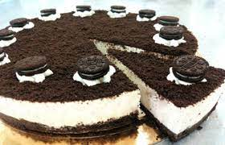

Recetas
Torta Oreo Helada
Ingredientes
- 650gr dulce de leche repostero
- 650 gr queso crema
- 200cc crema de leche
- 2 paquetes galletitas oreo
- 1 paquete galletitas mini oreo (para decorar)
- 100gr dulce de leche repostero (para decorar)

Preparación
- En una batidora con accesorio de lira colocar el queso crema junto con el dulce de leche. Mezclar.
- Cambiar de accesorio a batidor y verter la crema de leche. Homogeneizar la preparación y reservar.
- En un aro / molde de 26 cm de diámetro colocar una cintura de acetato. Armar su base y contorno colocando galletitas una al lado de la otra. Verter la preparación y rellenar. Freezar 3 horas mínimo antes de desmoldar. Decorar a gusto.